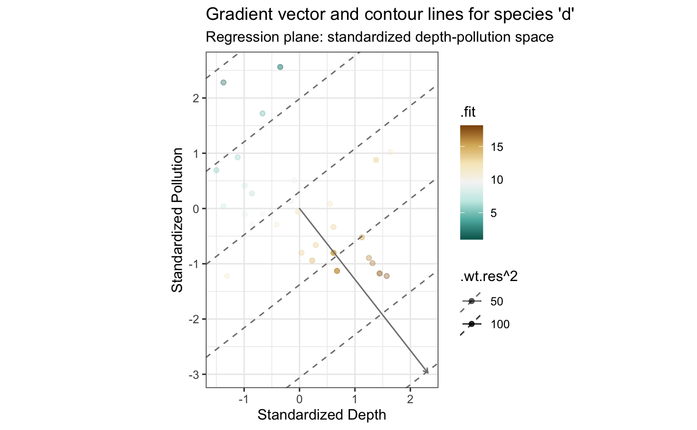
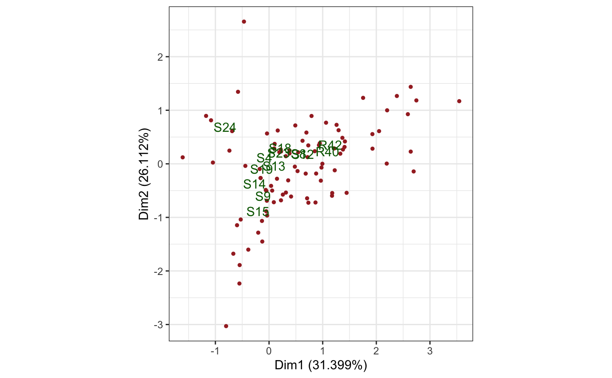
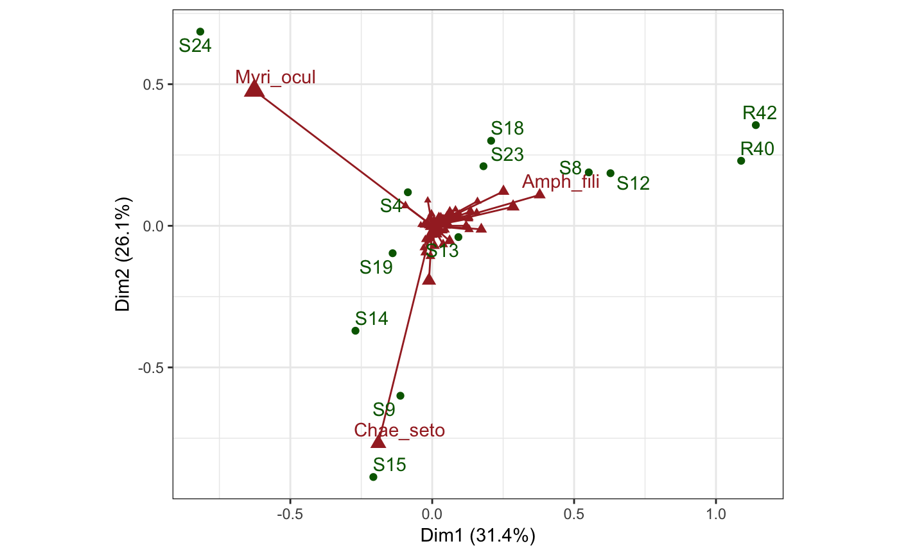
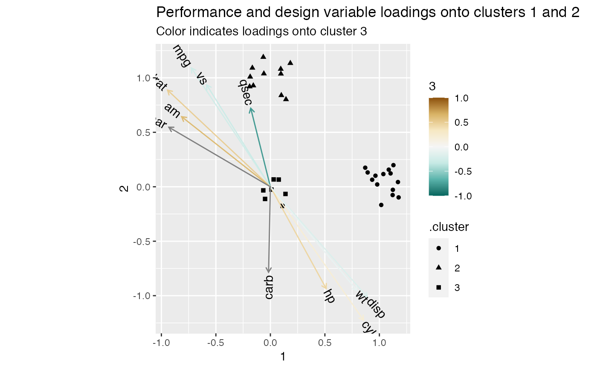

augmentation.RdThese functions return data associated with the cases, variables, and coordinates of an ordination object.
augmentation_u(x) augmentation_v(x) augmentation_factor(x, .matrix) augmentation.tbl_ord(x, .matrix) augmentation_coord(x) # S3 method for tbl_ord augment(x, data, .matrix = "uv", ...) augment_u(x) augment_v(x)
| x | A |
|---|---|
| .matrix | A character string matching one of several indicators for one
or both matrices in a matrix decomposition used for ordination. The
standard values are |
| data | Passed to |
| ... | Additional arguments from |
The augmentation_*() functions produce tibbles of values
associated with the cases, variables, and coordinates of a tbl_ord object.
The first field of each tibble is .name, which contains the case, variable,
or coordinate names. Additional fields contain information about the cases,
variables, or coordinates extracted from the original ordination object.
The augment_*() functions return the ordination with each or both factor
annotated with the result of augmentation_*(). In this way augment_*()
works like generics::augment() by extracting information for a tidy summary
of the components, but it differs in returning an annotated tbl_ord rather
than a tbl_df. The advantage of implementing separate methods for the
different components is that more information contained in the original
object becomes accessible to the user. To achieve a result similar to that of
generics::augment(), use fortify().
# Linear regression on marine ecosystem data # Adapt Exhibit 2.3 in Greenacre (2010) bioenv %>% transform( x = as.vector(scale(Depth)), y = as.vector(scale(Pollution)) ) %>% lm(formula = d ~ x + y) %>% as_tbl_ord() %>% augment() %>% print() -> bioenv_lm#> # A tbl_ord of class 'lm': (30 x 3) x (1 x 3)' #> # 3 coordinates: (Intercept), x, y #> # #> # U: [ 30 x 3 | 7 ] #> `(Intercept)` x y | .name .hat .sigma .cooksd #> | <chr> <dbl> <dbl> <dbl> #> 1 1 -0.156 0.132 | 1 1 0.0344 5.20 6.85e-3 #> 2 1 0.0363 -0.802 | 2 2 0.0587 5.24 4.64e-3 #> 3 1 -0.988 0.413 | 3 3 0.0670 5.26 3.62e-4 #> 4 1 -0.668 1.72 | 4 4 0.135 5.25 3.50e-3 #> 5 1 -0.860 -0.288 | 5 5 0.0750 5.26 6.07e-5 #> # … with 25 more rows, and 3 more #> # variables: .wt.res <dbl>, #> # .fit <dbl>, .se.fit <dbl> #> # #> # V: [ 1 x 3 | 1 ] #> `(Intercept)` x y | .name #> | <chr> #> 1 10.9 2.31 -2.97 | 1 dbioenv_lm %>% ggbiplot(aes(x = x, y = y, color = .fit, alpha = .wt.res ^ 2)) + theme_bw() + scale_color_distiller(type = "div", palette = 1) + scale_alpha_continuous(range = c(1/3, 1)) + geom_u_point() + geom_v_vector() + geom_v_isolines(ids = 1, by = 5) + labs(x = "Standardized Depth", y = "Standardized Pollution") + ggtitle( "Gradient vector and contour lines for species 'd'", "Regression plane: standardized depth-pollution space" )# Confer inertia in CA between rows and columns of benthic sample data benthos %>% ca::ca() %>% as_tbl_ord() %>% print() -> benthos_ca#> # A tbl_ord of class 'ca': (92 x 12) x (13 x 12)' #> # 12 coordinates: Dim1, Dim2, ..., Dim12 #> # #> # U: [ 92 x 12 | 0 ] #> Dim1 Dim2 Dim3 ... | #> | #> 1 -1.17 0.895 -0.140 | #> 2 -0.552 -2.23 -0.359 ... | #> 3 -0.0406 -0.689 0.687 | #> 4 1.22 0.287 -0.700 | #> 5 0.312 0.142 -0.137 | #> #> # #> # V: [ 13 x 12 | 0 ] #> Dim1 Dim2 Dim3 ... | #> | #> 1 -0.173 0.262 -0.376 | #> 2 1.11 0.417 1.52 ... | #> 3 -0.226 -1.33 -0.297 | #> 4 1.27 0.411 1.37 | #> 5 0.186 -0.0884 0.568 | #># Reproduce Exhibit 8.3 benthos_ca %>% confer_inertia("colprincipal") %>% ggbiplot(aes(label = .name)) + theme_bw() + geom_u_point(color = "brown", size = 1) + geom_v_text(color = "darkgreen")# Reproduce Exhibit 8.4 benthos_ca %>% augment(.matrix = "u") %>% transmute_u(mass = .mass, sqrt_mass = sqrt(.mass)) %>% confer_inertia("colprincipal") %>% ggbiplot(aes(label = .name), scale_u = "sqrt_mass") + theme_bw() + geom_u_vector(color = "brown", arrow = NULL) + geom_u_point(aes(size = mass), color = "brown", shape = 17) + scale_size_continuous(range = c(1, 4), guide = "none") + geom_u_text( stat = "chull", color = "brown", hjust = "outward", vjust = "outward" ) + geom_v_point(color = "darkgreen") + geom_v_text_repel(color = "darkgreen", min.segment.length = 2)# Interpreting (k-means) clusters as ordinations on the Motor Trends data mtcars %>% scale() %>% kmeans(centers = 3) %>% as_tbl_ord() %>% augment() %>% print() -> mtcars_kmeans#> # A tbl_ord of class 'kmeans': (32 x 3) x (11 x 3)' #> # 3 coordinates: 1, 2, 3 #> # #> # U: [ 32 x 3 | 2 ] #> `1` `2` `3` | .name .cluster #> | <chr> <fct> #> 1 1 0 0 | 1 Mazda RX4 1 #> 2 1 0 0 | 2 Mazda RX4 Wag 1 #> 3 0 0 1 | 3 Datsun 710 3 #> 4 0 1 0 | 4 Hornet 4 Drive 2 #> 5 0 1 0 | 5 Hornet Sportabout 2 #> # … with 27 more rows #> # #> # V: [ 11 x 3 | 1 ] #> `1` `2` `3` | .name #> | <chr> #> 1 -0.264 -0.725 1.09 | 1 mpg #> 2 0.215 0.855 -1.22 | 2 cyl #> 3 -0.188 0.890 -1.01 | 3 disp #> 4 0.444 0.512 -0.934 | 4 hp #> 5 0.493 -0.943 0.887 | 5 drat #> # … with 6 more rowsmtcars_kmeans %>% augmentation_coord() %>% transform(.sdev = sqrt(.withinss / .size)) %>% print() -> mtcars_coord#> .name .size .withinss .sdev #> 1 1 7 43.20915 2.484499 #> 2 2 14 45.78543 1.808421 #> 3 3 11 42.65755 1.969253# discriminate between clusters 1 and 2 mtcars_kmeans %>% ggbiplot(color = factor(.cluster)) + geom_jitter(stat = "u", aes(shape = .cluster), width = .2, height = .2) + geom_v_vector(aes(color = `3`)) + scale_color_distiller(type = "div", limits = c(-1, 1)) + geom_v_text_radiate(aes(label = .name)) + ggtitle( "Performance and design variable loadings onto clusters 1 and 2", "Color indicates loadings onto cluster 3" )